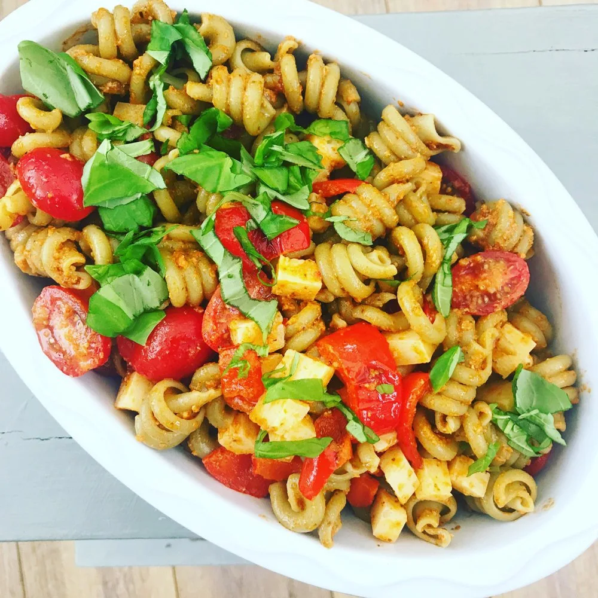

Spanish Pasta Salad

Spanish pasta salad is super easy, super tasty, ready in less than 20 minutes and packed to bursting with lovely Spanish sunshine flavours.
Quick, tasty and delicious our Spanish pasta salad can be ready in less than 20 minutes making it great for weeknight dinner when you’re short on time.
Ingredients
- 350g pasta – I used Spinach trotolle pasta, but feel free to use any pasta shapes you like.
- 4 tbsp sun dried tomato pesto
- 450g jar of antipasto chargrilled peppers (drained and roughly chopped)
- 300g baby plum tomatoes – halved
- 1 tsp sweet smoked paprika
- 100g Manchego cheese – cut into cubes
- Handful of Basil leaves – roughly torn
Steps
- Cook the pasta as per the packet instructions in plenty of boiling salted water.
- Once cooked drain using a colander and run the pasta under cold water to cool it down quickly.
- Mix the pesto into the pasta and stir gently to coat all the pasta shapes.
- Toss in the baby plum tomatoes, chopped peppers, Manchego cheese and smoked paprika. Stir everything together gently.
- Serve 🍴